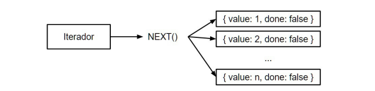

um a um, os itens de um iterável, enquanto mantém o status da sua posição atual na estrutura. Esses objetos oferecem o método next , que retorna o próximo item da estrutura do iterável sempre que invocado. Na realidade, este método retorna um outro objeto com duas propriedades: done e value . O done é um valor booleano que indica se toda a estrutura foi acessada, enquanto o value contém o valor extraído.
Por exemplo, se tivermos uma coleção com um único número (o número 1) e chamarmos o método next uma vez, obteremos este valor: iteravel.next(); // {value: 1, done: false} Se chamamos novamente o next , não temos mais valor, pois a coleção inteira já foi percorrida. Entretanto, temos a indicação de que ela foi finalizada na propriedade done que retornará true : iteravel.next(); // {value: undefined, done: true}